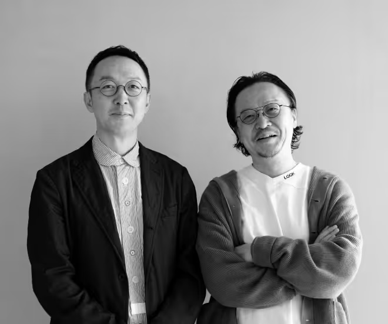

Company
まなかの軌道

遡ること 16 年前の春まなかは、両親の基盤を引き継ぎ経営を勤しむ兄に、弟が気軽な心持ちで賛画する形で出航します。
当時2010年頃の、時代を象徴するキーワードしてオバマ、アラブの春、リーマンショック、ビットコイン、いいね、リツイート、サブスクリプション、ノームコア、AKB48、秋葉原無差別殺傷、後期高齢者等の現代史において切り離すことの出来ないパワーワードが。インターネットが当に一般化し、スマートフォン普及によるデジタルイノベーションが大きくそして良くも悪くも暮らしに影響を及ぼし始めた頃だったように思います。
東日本大震災未曽有の天災が日本を襲ったのもこの頃です。当時三鷹のオフィスの窓から見た、バスが公道に緊急停止しなす術もなく、地面と呼応するかのように激しく上下に揺れていたシーンは忘れることはありません。
そんな時代背景の中まなかの二人の宮嶋も右往左往していたことを覚えています。
起業精神の柱をどこに置くのか。
凄まじい進化をみせるデジタルテクノロジー周辺の衛星として全体成功の一端として貢献する。これが王道であり資本主義的にも正解でした。当時多くの起業家がその道を選択し闊歩していきました。その成果なのかはわかりませんが、今となっては AI を老若男女が使いこなすまでとなっております。世界は合理化や生産性の追求の先に人々の幸せがあることを証明し続けています。
一方の二人。
天邪鬼なのか幼稚な原理主義者なのか。そう言った素養はあるかもしれませんが、我々が下した判断は違いました。
あの頃二人の目の前には、合理化推奨、暮らしの歩幅が少しずつ広がり続ける中、これまでの人間の在り方が紡いできた尊重、慈愛、葛藤、伝統、知恵、丁寧、手間等と言った少し面倒で古臭く感じてしまう感性やニュアンスがまざまざと希薄から消滅していくのではという予感が対峙していました。
その予感を感じていたのは私達だけではないはずです。
どこか世の中の体温が少しずつ下がっている実感値を見て取れた人が少なからずいて、言葉に出来ずともそのことが今後の社会問題の真因として顕在化するタイミングがくるのではないか、そんな気運は確かにあったのです。
そこで二人は、そんな巻き起こるかもわからない、社会問題に小石を投げる判断をしてしまいます。そもそも起業家（少し恥ずかしい）としての根っこに、ひたすら利益追求することより自分たちが生み出す価値で世の中を良くしたい残したいが強かった事実はあります。
であるなら、非合理的で回り道を推奨するような価値の意味を立証し、人がより人らしく、暮らしの体温をあげられるような価値を創出する企業をやってみない？二人の新生まなかがスタートした合図でした。
会社概要
- 会社名 :
- 株式会社まなか
- 所在地 :
- [ 本社 ] 〒104-0061 東京都中央区銀座 1 丁目 15-4 ヒューリック銀座一丁目 昭和通りビル 9F[ 四谷オフィス ] 〒160-0004 東京都新宿区四谷 2 丁目 11-6 FORECAST 四谷 7F
- 設立 :
- 2000 年 1 月 31 日
- 資本金 :
- 1,000 万円
- 代表取締役 :
- 宮嶋良任
- 従業員数 :
- 70 名
- 事業内容 :
- 葬祭事業 / 墓石事業 / 仏壇事業 / 香り事業 / 寺院コンサルティング事業
- Tel :
- 03-6300-4711 ( 代表 )
- 取引銀行 :
- 三菱 UFJ 銀行 / りそな銀行
- 関連会社 :
- 株式会社ONDO 〒103-0026 東京都中央区日本橋兜町 17-1
運営施設 :
- 銀座サロン ( 銀座ショールーム内 )
- 新宿サロン ( 新宿ショールーム内 )
まなかのお墓